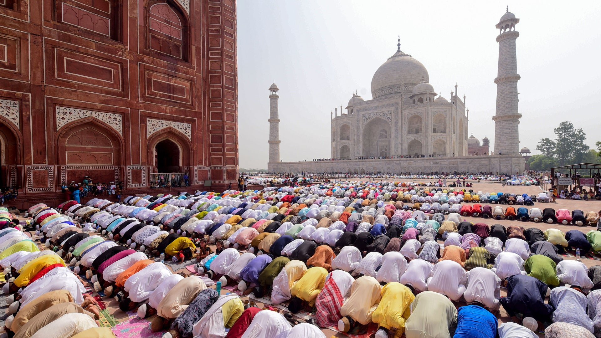

Eid, known as Eid al-Fitr and Eid al-Adha, are two of the most significant Islamic festivals celebrated by
Muslims around the world. Each Eid holds distinct meanings and traditions, showcasing the depth of faith and
community in the Islamic culture.
Eid al-Fitr, also known as the "Festival of Breaking the Fast," is celebrated at the end of Ramadan, the
holy month of fasting. It marks a joyous occasion for Muslims as they come together to celebrate the
successful completion of their month-long fast from dawn until sunset. On this day, Muslims gather for
special prayers at mosques, express gratitude, and seek forgiveness from Allah. A key aspect of Eid al-Fitr
is the act of giving to those in need, called "Zakat al-Fitr," where Muslims offer charity to ensure
everyone can partake in the celebrations.
Eid al-Adha, known as the "Festival of Sacrifice," commemorates the willingness of the prophet Ibrahim
(Abraham) to sacrifice his son as an act of obedience to God. Before the sacrifice, Allah provided a ram to
be sacrificed instead. To honor this story, Muslims who can afford to do so perform the act of Qurbani, or
ritual animal sacrifice. The meat is divided into three parts: one for the family, one for friends and
neighbors, and one for the less fortunate.
Both Eids are characterized by festive gatherings, where Muslims don their finest attire, often new clothes,
and share elaborate meals with family, friends, and neighbors. Sweets and special dishes are prepared, and
homes are decorated to reflect the festive spirit. Greetings of "Eid Mubarak" are exchanged, signifying
well-wishes for a blessed Eid.
Eid festivities transcend cultural and geographical boundaries, uniting Muslims from various backgrounds.
It's a time of spiritual reflection, gratitude, and bonding with loved ones. Beyond the celebrations, Eids
underscore the values of compassion, charity, and gratitude that are central to Islamic teachings.
In essence, Eid al-Fitr and Eid al-Adha encapsulate the Islamic principles of faith, unity, and generosity.
These festivals bring the global Muslim community together, fostering a sense of shared identity and
purpose, and highlighting the profound significance of faith in the lives of millions around the world.
